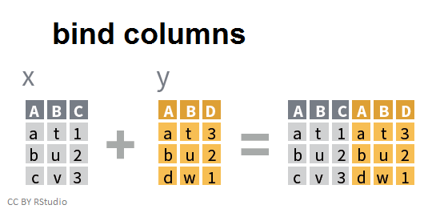

Code
#install.packages("dplyr") # Installation du package si besoin
library("dplyr") # Chargement du package : nécessaire à chaque début de session de travail dans R StudioPrécédemment, nous avons vu comment se renseigner sur un objet (type, nom des colonnes, nombre d’observations) et comment enchaîner les pipes pour sélectionner, filtrer et enrichir ses données.
Créer un nouveau projet RStudio.
Créer un script R et l’enregistrer dans le dossier du projet.
Copier les données de l’Enquête Emploi 2019 dans le dossier du projet RStudio, c’est-à-dire dans le même dossier que le fichier .Rproj.
Charger le package dplyr.
#install.packages("dplyr") # Installation du package si besoin
library("dplyr") # Chargement du package : nécessaire à chaque début de session de travail dans R StudioImporter les données .csv de l’Enquête emploi 2019 avec la fonction read.csv2 et lui assigner le nom EEC_2019.
EEC_2019 <- read.csv2("FD_EEC_2019.csv",
header = TRUE,
sep = ";",
quote = "\"",
dec = ".",
fill = TRUE,
comment.char = "")Obtenir des informations sur le dataframe
nrow(EEC_2019) # Nombre de lignes
colnames(EEC_2019) # Nom des colonnes
str(EEC_2019) # Informations sur le dataframe et les variablesOn va désormais enchaîner les opérations, il faut donc créer un dataframe et enchaîner les pipes pour obtenir notre dataframe final.
Créer un dataframe en gardant uniquement les variables de la liste suivante : TRIM, ANNEE, AGE5, SEXE, ACTEU, RABS, CSTOTR, HHC6, EXTRIAN, ACTIF, NAFG088UN
df_final <- EEC_2019 %>%
select(TRIM,
ANNEE,
AGE5,
SEXE,
ACTEU,
RABS,
CSTOTR,
HHC6,
EXTRIAN,
ACTIF,
NAFG088UN) # Garder uniquement les variables contenues dans liste_variable Dans le nouveau dataframe, créer une variable trimestre concaténant la variable TRIM et ANNEE à l’aide de la fonction paste0(). Nous souhaitons obtenir une variable sous la forme “2019-T4”.
... %>% mutate(trimestre = paste0(ANNEE,"-T",TRIM))Afficher les modalités de la variable RABS.
unique(EEC_2019$RABS)Remplacer les NA de la variable RABS par des 0 avec la fonction replace().
... %>% mutate(RABS = replace(RABS, is.na(RABS), 0))
# Autre solution avec ifelse
... %>% mutate(RABS = ifelse(is.na(RABS) == TRUE, 0, RABS))Remplacer les NA de toutes les variables par des 0 avec la fonction mutate_all().
... %>% mutate_all( ~ replace(., is.na(.) == TRUE, 0)) # Mutate all permet de modifier toutes les variables Les données de l’enquête emploi sont des données pondérées, renommer la variable EXTRIAN par POIDS.
... %>% rename(POIDS = EXTRIAN)Trier les données par trimestre dans l’ordre croissant à l’aide de la fonction arrange().
... %>% arrange(trimestre) # Tri du dataframe en fonction du trimestreA l’aide de la fonction if_else(), ajouter une variable chomage prenant la valeur “oui” lorsque la variable ACTEU prend la valeur 2, “non” sinon.
... %>% mutate(chomage = if_else(ACTEU == "2", "oui", "non"))A l’aide de la fonction case_when(), créer une variable statut_activite_libelle prenant les modalités ci-dessous :
... %>% mutate(statut_activite_libelle = case_when(ACTEU == "0" ~ "Sans objet",
ACTEU == "1" ~ "Actif occupé",
ACTEU == "2" ~ "Chômeur",
ACTEU == "3" ~ "Inactif",
TRUE ~ "Oubli"))| Modalité | Défintion |
|---|---|
| “0” | Sans objet |
| “1” | Actif occupé |
| “2” | Chômeur |
| “3” | Inactif |
Lors de la création d’une variable conditionnelle avec la fonction case_when(), il est conseillé de systématiquement définir une valeur par défaut avec une dernière condition fixée à TRUE, qui permettra de repérer les cas “oubliés”, non concernés par les conditions précédentes.
Nous allons désormais récupérer les intitulés de la NAF en 88 postes (variable NAFG088UN) à l’aide des jointures.
En copiant le fichier naf2008_liste_n2.xlsx dans le dossier du projet, on utilise les avantages des chemins relatifs et on peut ne spécifier que le nom du fichier dans l’import, sans le chemin absolu sur le disque.
Importer le fichier naf2008_liste_n2.xlsx via la fonction read.xlsx() du package openxlsx. Attention, les données à importer commencent à la troisième ligne du document Excel. Trouver l’option de read.xlsx() qui permet de le spécifier
#install.packages("openxlsx) # Installation du package si nécessaire
library(openxlsx)
intitule_naf <- read.xlsx("naf2008_liste_n2.xlsx ",
startRow = 3) Créer un dataframe unique en joignant les libellés NAF via la fonction inner_join(). Pourquoi le nombre d’observations de df_final_inner est inférieur à celui de df_final ?
df_final_inner <- df_final %>%
mutate(NAFG088UN = as.character(NAFG088UN)) %>%
inner_join(intitule_naf, by = join_by("NAFG088UN" == "Code")) Deux conseils pour réaliser la jointure : Les variables permettant de réaliser la jointure ne portent pas le même nom. Il est toujours utile de regarder les exemples d’utilisation proposés dans l’aide de la fonction ?inner_join. Les variables de jointure ne doivent pas obligatoirement porter le même nom, mais elles doivent être de même type pour que la jointure fonctionne. A vous de jouer pour trouver la solution !
Comment faire pour conserver toutes les observations de df_final en joingnant les libellés NAF ? Créer un nouveau data.frame qui répond à la question.
df_final_left <- df_final %>%
mutate(NAFG088UN = as.character(NAFG088UN)) %>%
left_join(intitule_naf, by = join_by("NAFG088UN" == "Code"))Créer un dataframe qui correspond à la jointure de df_final et des libellés NAF via la fonction full_join(). Qu’est ce que cette jointure permet de faire ?
df_final_full <- df_final %>%
mutate(NAFG088UN = as.character(NAFG088UN)) %>%
full_join(intitule_naf, by = join_by("NAFG088UN" == "Code"))Lequel de ces data frames joints avec les libellés conservieriez-vous pour une étude avec les données EEC ?
inner_join() : Retourne les observations lorsque l’identifiant est présent dans les deux tables.
left_join() : Retourne toutes les observations de la table de gauche, même si l’identifiant n’est pas présent dans la table de droite.
right_join() : Retourne toutes les observations de la table de droite, même si l’identifiant n’est pas présent dans la table de gauche.
fulljoin() : Retourne l’ensemble des observations des deux tables, même lorsque l’identifiant ne se retrouve que dans l’une des tables.Avec R, nous pouvons aussi empiler des données avec bind_cols() ou bien les coller entre elles avec bind_rows(). Cependant, nous vous conseillons d’utiliser les jointures classiques (inner_join, left_join, …) qui permettent toutes les possibilités avec des identifiants de jointure.
bind_cols() permet d’accoler 2 objets via les colonnes. Il est nécessaire que les variables et l’ordre dans lequel elles apparaissent correspondent.
bind_rows() permet d’accoler 2 objets via les lignes.
Nous avons désormais un dataframe propre et utilisable pour créer des statistiques descriptives : le df_final_left.
Sauvegarder dans un dossier son dataframe propre au format .xlsx à l’aide de la fonction write.xlsx(). vérifier que le fichier est bien enregistré à l’endroit renseigné.
write.xlsx(df_final_left, file = "df.xlsx") # Enregistrement du dataframeCharger son dataframe à l’aide de la fonction read.xlsx() pour vérifier que la sauvegarde est correcte.
df_charge <- read.xlsx("df.xlsx") # Chargement du dataframeEnregister son fichier et passer à l’exercice 3.